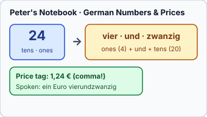

Zahlen, Preise und Telefonnummern
Mit einem KI-Tutor lernen
Ein KI-Tutor erklärt dir diese Seite und hilft dir bei den Aufgaben. Wähl deinen Assistenten:
Mit Claude öffnen Mit ChatGPT öffnen Mit Mistral Vibe öffnen
Du nutzt dein eigenes Konto beim Anbieter. Der Assistent ist kein Angebot von lernapps.net: lernapps liefert nur Inhalte und Aufgaben. Die Wahl gilt für alle Seiten, nur auf diesem Gerät.
Brötchen und Busticket in Lindenberg
Nach dieser Seite kannst du Zahlen von 0 bis 100, Preise in Euro und Cent sowie Telefonnummern auf Deutsch verstehen. Morgens kauft Peter beim Bäcker zwei Brötchen und löst danach im Schulbus eine Fahrkarte. Im Deutschen spricht man zweistellige Zahlen ab 21 erst Einer, dann Zehner.
Aufgabe
Lösung
fünfundvierzig richtige Antwort
Erst die Einerstelle (fünf), dann „und“, dann die Zehnerstelle (vierzig).
vierundfünfzig
vierundfünfzig ist 54 – ein typischer Zahlendreher!
vierzigfünf
Im Deutschen stehen die Einer vor den Zehnern mit „und“ dazwischen.
Ab 21 nennt das Deutsche immer zuerst die Einerstelle und dann die Zehnerstelle.
Zahlen und Euro-Preise

© CC0-1.0Peters Lindenberg-Heft: Einer vor Zehner und Komma bei Euro-Preisen.
| Deutsch | Beispiel · Hinweis | Englisch |
|---|---|---|
| null, eins, zwei, drei, vier, fünf | 0, 1, 2, 3, 4, 5 | |
| sechs, sieben, acht, neun, zehn | 6, 7, 8, 9, 10 | |
| elf, zwölf, dreizehn, sechzehn, siebzehn, zwanzig | 16 (sechzehn) und 17 (siebzehn) sind kurz; aus eins wird in 21/31 „ein-“ (einunddreißig). | 11, 12, 13, 16, 17, 20 |
| dreißig, vierzig, fünfzig, sechzig, siebzig, achtzig, neunzig, hundert | Nur dreißig wird mit ß geschrieben; alle anderen Zehner enden auf -zig. | 30, 40, 50, 60, 70, 80, 90, 100 |
| die Telefonnummer | Meine Telefonnummer ist null-eins-sieben-zwei, dreißig, zwölf. Phone numbers are read digit by digit or in two-digit pairs: 0172 30 12. | the phone number |
| Was kostet das? | Das kostet drei Euro zwanzig. That costs three euros twenty. | How much does that cost? |
Zahlen und Preise sicher anwenden
Aufgabe
Lösung
Richtige Antwort: 4 €
3,20 € + 0,80 € = 4,00 €. In Deutschland trennt ein Komma Euro und Cent.
Aufgabe
Lösung
Richtige Antwort: siebzehn – 17; einunddreißig – 31; siebenundsechzig – 67; null-eins-sieben-zwei – 0172
Lies von hinten nach vorn: siebenundsechzig = 7 + 60 = 67.
Aufgabe
Schreibe die beiden Zahlen als deutsches Wort (ohne Leerzeichen).
Tipp
Nutze bei 25 die Reihenfolge Einer + und + Zehner, und bei 30 das ß.
- 25
- 30
Lösung
- fünfundzwanzig
- dreißig
Super! Jetzt kennst du Zahlen und Preise – auf der nächsten Seite trägt Peter Uhrzeiten und Wochentage in seinen Kalender ein.
Fehler gefunden oder eine Idee für diese App?